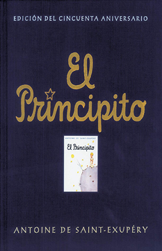

El Principito
Sinopsis
El principito es un cuento poético que viene acompañado de ilustraciones hechas con acuarelas por el mismo Saint-Exupéry.En él, un piloto se encuentra perdido en el desierto del Sahara después de que su avión sufriera una avería, pero para su sorpresa, es allí donde conoce a un pequeño príncipe proveniente de otro planeta. La historia tiene una temática filosófica, donde se incluyen críticas sociales dirigidas a la «extrañeza» con la que los adultos ven las cosas. Estas críticas a las cosas «importantes» y al mundo de los adultos van apareciendo en el libro a lo largo de la narración.
Reseña
Acompañar al principito en su viaje ha sido maravilloso. Es un libro que todo el mundo debería leer. Hay más verdades que palabras en este libro y realmente no nos enseña nada nuevo, solo nos recuerda algunas cosas que nunca debimos olvidar al hacernos mayores. ...
5/5